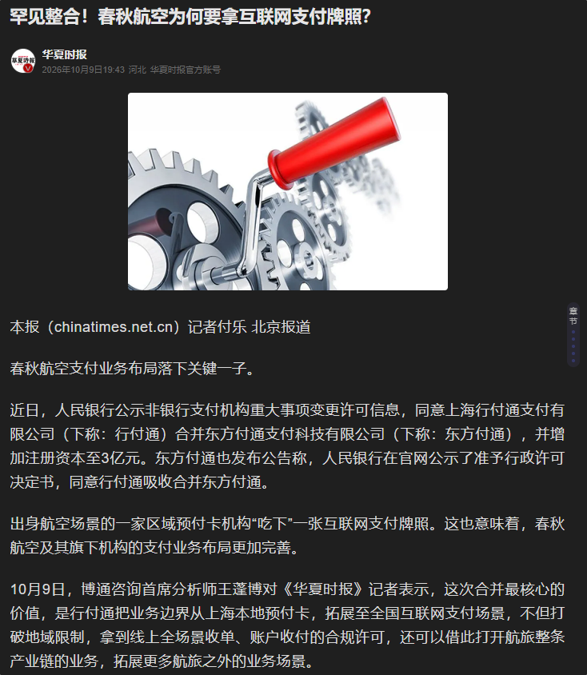

我跟春秋航空没仇，单纯只想为留学生发声。不占用每年5万美元便利化额度就只能以留学生学费、生活费汇出 而浙江稠州商业银行就是专门干这事的
如果普通人以“旅行预付卡”的名义充值这张GoPay商业信用卡，并按照6.8的汇率转成美元，先不说汇率亏不亏
走的路子就是绕过监管冒充留学生，而自己蒙在鼓里。窗户纸总有一天会被捅破，那么到时候直接爆了的话会引起对留学生这块的那个合规业务越来越严格要求，那正常留学生想要跨境汇款，不得不提交更多材料？另外今天看新闻，春秋航空拿国内互联网支付牌照，那说明公司是想往合规做的，这是好事
我也回应“真骗了大家去上海虹桥航站楼总部那边找不就行了”这句话，人家总部表示关我屁事，很多诈骗保险佬这些企业会去香港设立主体
GoPay实际主体是由春秋国际控股（香港）有限公司控股，那么内地春秋为什么不直接控股？如果真跑了内地法院是管不了香港，就只能在香港起诉这家空壳公司
而且也有网友指出，我们开的户不是稠州的二类户而是平台标记账户（NRA）。反正中国人民银行总局和金融监管单位的报备要求就是，资金必须要在银行，也就是稠州银行做保管。既然GoPay说自己合规，那合规为什么不把卡给写出来？连香港、新加坡都没牌照的公司，要真合规还打什么地道战

如果普通人以“旅行预付卡”的名义充值这张GoPay商业信用卡，并按照6.8的汇率转成美元，先不说汇率亏不亏
走的路子就是绕过监管冒充留学生，而自己蒙在鼓里。窗户纸总有一天会被捅破，那么到时候直接爆了的话会引起对留学生这块的那个合规业务越来越严格要求，那正常留学生想要跨境汇款，不得不提交更多材料？另外今天看新闻，春秋航空拿国内互联网支付牌照，那说明公司是想往合规做的，这是好事
我也回应“真骗了大家去上海虹桥航站楼总部那边找不就行了”这句话，人家总部表示关我屁事，很多诈骗保险佬这些企业会去香港设立主体
GoPay实际主体是由春秋国际控股（香港）有限公司控股，那么内地春秋为什么不直接控股？如果真跑了内地法院是管不了香港，就只能在香港起诉这家空壳公司
而且也有网友指出，我们开的户不是稠州的二类户而是平台标记账户（NRA）。反正中国人民银行总局和金融监管单位的报备要求就是，资金必须要在银行，也就是稠州银行做保管。既然GoPay说自己合规，那合规为什么不把卡给写出来？连香港、新加坡都没牌照的公司，要真合规还打什么地道战

@realNyarime Gopay 根本就没有合规资质，他们的境外主体在稠州银行开设的 NRA 账户，sutton 卡是他们自己对接的，然后跟稠州银行报备资金用途，然后稠州银行释放国内用户的存款给他们的NRA，通过这种方式把钱转到境外，实际上都是绕不开外管，早晚要出问题。而且 sutton bank 的卡，懂得都懂u卡圈里好多都发的他家